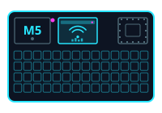

WiFi Sapper
Alpha · 5 boardsFlash the firmware from your browser.
WiFi Sapper is a headless-first, autonomous WPA/WPA2 handshake hunter for ESP-32 boards.
Pick your board, plug it in over USB, click install: no toolchain, no esptool,
no clone. It flashes the latest tagged
release.
Install

Your browser can't talk to serial devices. Web Serial needs desktop Chrome, Edge, or Opera. On Firefox / Safari / mobile, use the manual install below.
This page must be served over HTTPS to flash.
Open the hosted page rather than a local file:// copy.
Install erases the whole device. The Sapper keeps its captures, cracked-password manifest, and provisioning on internal flash (LittleFS), so a full erase wipes all of them: you will re-run first-boot setup afterwards. You'll need the selected board, a USB data cable, and desktop Chrome or Edge.
- Target
- M5Stack Cardputer / ADV · ESP32-S3
- Image
- factory · merged @ 0x0
- Source
- latest tagged GitHub release
- Integrity
- SHA-256 · SHA256SUMS.txt
Manual install (Firefox · Safari · CLI)
Download the board's -factory.bin and SHA256SUMS.txt from the
latest release,
verify, then flash to 0x0 (the merged image carries the bootloader at its
chip-family offset):
# verify the download first sha256sum -c SHA256SUMS.txt # ESP32-S3 boards (Cardputer, T-Embed) esptool --chip esp32s3 --baud 921600 write-flash \ 0x0 sapper-cardputer-<ver>-factory.bin # classic ESP32 boards (M5StickC Plus2, CYD, Atom Echo) esptool --chip esp32 --baud 921600 write-flash \ 0x0 sapper-cyd_3248s035c-<ver>-factory.bin